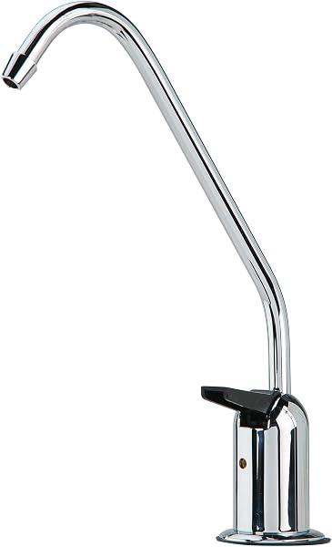
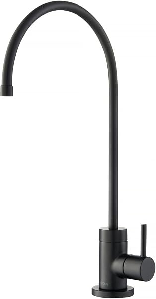
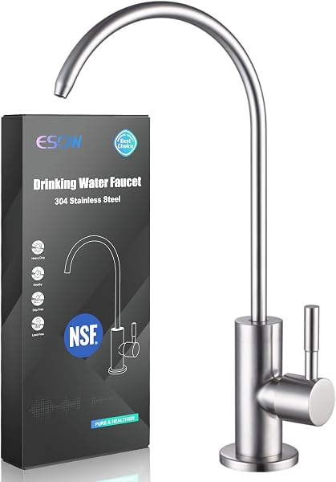

Reverse Osmosis Faucets: Air-Gap vs Non-Air-Gap (and Finishes) 2026
PureFlow Lab is reader-supported. We may earn a commission when you buy through links in this guide — at no extra cost to you. As an Amazon Associate, we earn from qualifying purchases. See our Disclosure for details.
The faucet is the one part of your reverse osmosis system anyone actually sees — and it’s the part most buyers have questions about. There are two decisions to make: air-gap vs non-air-gap (a function/plumbing-code question) and finish (a looks question). This guide settles both, with the best RO faucet picks for 2026.
Top Picks (At a Glance)

WEWE Drinking Water Faucet — Non-Air-Gap
The most popular RO faucet on Amazon by a wide margin — 14,000+ reviews at 4.6 stars. 100% lead-free stainless, simple single-line non-air-gap design, available in multiple finishes. Quiet, easy to install, and cheap. The right pick for most people. ~$28.
Check Price on Amazon →
Watts Premier Air-Gap Auxiliary Faucet
The established air-gap option for jurisdictions that require one. Standard 3-line air-gap design with a built-in backflow gap, lead-free, from a trusted water-treatment brand. ~$35.
Check Price on Amazon →
KRAUS Purita — Designer Non-Air-Gap Faucet
For a faucet that matches a high-end kitchen. KRAUS is a respected faucet brand, and the Purita is 100% lead-free with premium finishes (matte black, brushed nickel, chrome) and a heavier, more substantial feel than budget faucets. 1,400+ reviews at 4.6 stars. ~$66.
Check Price on Amazon →
ESOW Water Filter Faucet — Lead-Free
Another well-proven non-air-gap option (4,400+ reviews) with a slightly different spout shape and finish range, if the WEWE styling isn’t your taste. 100% lead-free. ~$39.
Check Price on Amazon →TL;DR: An RO faucet is the small dedicated tap that dispenses your filtered water. The big decision is air-gap vs non-air-gap: a non-air-gap faucet is simpler, quieter, easier to install, and what most people should buy — the WEWE (14,000+ reviews) is the default pick. Choose an air-gap faucet like the Watts Premier only if your local plumbing code requires it (some jurisdictions, notably under the UPC/parts of the West, do). For a designer look, the KRAUS Purita matches high-end kitchens. All RO faucets use a standard connection, so you can swap the one that came with your system for any of these.
What Is an RO Faucet (and Why a Dedicated One)?
A reverse osmosis system dispenses its purified water through its own small dedicated faucet, separate from your main kitchen tap. There are two reasons for this: RO water flows at lower pressure than your main line (especially from a tank), and keeping it separate avoids mixing purified water with unfiltered hot/cold water at the main faucet. Your RO system comes with a basic faucet included — but many people swap it for a nicer finish or a different style, which is easy because RO faucets use a standard mounting and 1/4” or 3/8” tubing connection.
Air-Gap vs Non-Air-Gap: The Real Difference
This is the question that confuses most RO buyers. Here’s the straight answer.
An air-gap faucet has a small built-in gap in the drain line, designed to prevent dirty water from your sink drain from ever being siphoned back into your RO system if the drain clogs or backs up. It’s a backflow-prevention safety feature, and some plumbing codes require it — the Uniform Plumbing Code (UPC), used in parts of the western U.S. and elsewhere, has historically called for an air gap on RO drain connections.
- Pros: Code-compliant where required; physical backflow protection.
- Cons: More complex install (three lines through the faucet instead of one); can make a gurgling or trickling noise when the system flushes; if the small air-gap hole gets clogged, it can spit water onto your counter; generally a bit pricier.
A non-air-gap faucet is the simpler, more common design. It has a single line to the faucet and relies on the RO system’s check valve to prevent backflow (which modern systems all have).
- Pros: Quiet, easy install, cheaper, cleaner look, no gurgling.
- Cons: Not compliant in jurisdictions that specifically require an air gap.
The recommendation for most people: non-air-gap. It’s simpler, quieter, and the system’s check valve handles backflow protection for the vast majority of installs. Choose air-gap only if your local plumbing code requires it — if you’re unsure, check with your local building department or a plumber, especially in California and other UPC areas. When in doubt and you want maximum safety/compliance, the air-gap is the conservative choice.
A Quick Word on Finishes
Beyond the air-gap question, the faucet is a visible piece of kitchen hardware, so finish matters. Common options:
- Chrome — the default; matches most kitchens and the most affordable.
- Brushed/Satin Nickel — warmer, hides water spots well, very popular.
- Matte Black — modern, increasingly common, matches contemporary kitchens (the WEWE and KRAUS both offer it).
- Oil-Rubbed Bronze — traditional/rustic look.
Pick the finish that matches your main kitchen faucet for a cohesive look. There’s no performance difference between finishes — just make sure the faucet is 100% lead-free (all our picks are), since this is your drinking water.
How to Choose Your RO Faucet
Three quick questions:
- Does my local code require an air gap? If yes (check with your building department, common under the UPC), get an air-gap faucet. If no, get non-air-gap.
- What finish matches my kitchen? Match your main faucet — chrome, brushed nickel, or matte black are the safe, popular choices.
- How much do I care about the look? A $28 WEWE performs identically to a $66 designer faucet; the premium buys finish quality and heft, not better water.
Comparison Table
| Faucet | Type | Finishes | Standout | Price |
|---|---|---|---|---|
| WEWE | Non-air-gap | Black, nickel, chrome | Most popular (14K+ reviews), cheap | $28 |
| Watts Premier | Air-gap | Chrome | Code-compliant air-gap | $35 |
| KRAUS Purita | Non-air-gap | Black, nickel, chrome | Designer quality | $66 |
| ESOW | Non-air-gap | Multiple | Proven budget alternative | $39 |
Common RO Faucet Problems (and Fixes)
A few issues come up with RO faucets — most are quick fixes:
- Faucet drips or won’t fully shut off. Usually a worn faucet cartridge/valve or debris on the seat. Replacing the faucet (a simple swap) resolves it; on a new faucet, check the connections are seated.
- Weak flow from the faucet. More often a system issue than the faucet — clogged filters, a low tank, or low pressure. Rule those out before blaming the faucet.
- Leak at the base of the faucet. Typically a loose mounting nut underneath or a connection not fully pushed into its quick-connect fitting. Tighten the base and re-seat the tubing.
- Gurgling. Normal on air-gap faucets; on a non-air-gap faucet it signals a kinked or partially clogged drain line.
- Loose or wobbly handle. The mounting hardware under the sink has loosened — snug it from below.
Most faucet problems are solved either by tightening a connection or by swapping the inexpensive faucet itself, since RO faucets use standard fittings.
FAQ
Do I need an air-gap faucet for reverse osmosis?
Only if your local plumbing code requires it. The air gap is a backflow-prevention feature; some jurisdictions (notably areas under the Uniform Plumbing Code, including parts of California and the West) require it on RO drains. Everywhere else, a non-air-gap faucet is simpler, quieter, and relies on the system’s built-in check valve for backflow protection. Check with your local building department if you’re unsure.
Why does my reverse osmosis faucet gurgle or make noise?
Gurgling is almost always a sign of an air-gap faucet — the noise comes from wastewater passing through the air gap as the system flushes. It’s normal for air-gap designs. If the noise bothers you and your code allows it, switching to a non-air-gap faucet eliminates it. (If a non-air-gap faucet suddenly starts gurgling, check for a kinked or clogged drain line.)
Can I replace the faucet that came with my RO system?
Yes. RO faucets use a standard mounting and 1/4” (or 3/8”) quick-connect tubing, so you can swap the included faucet for any compatible RO faucet — non-air-gap for non-air-gap, or air-gap for air-gap (don’t mix types, since the system is plumbed for one or the other). It’s a simple swap during or after installation.
Are reverse osmosis faucets universal?
Mostly, yes — RO faucets share standard connections, so most aftermarket faucets fit most systems. The one thing to match is air-gap vs non-air-gap: your system is set up for one type, so replace like with like. Tankless systems are always non-air-gap.
What size hole does an RO faucet need?
Most RO faucets need a hole about 1/2 inch in diameter. Many sinks have a spare capped hole that works, or you can drill one (easy in stainless, requires a diamond bit in granite — see our installation guide).
Is a more expensive RO faucet worth it?
For water quality, no — a $28 lead-free faucet delivers the same water as a $66 one. You pay more for finish durability, a heavier feel, and designer styling that matches a high-end kitchen. If looks matter to you, the upgrade is reasonable; if not, the budget pick performs identically.
How do I fix a dripping reverse osmosis faucet?
A persistent drip usually means a worn faucet valve or debris on the seat. Because RO faucets are inexpensive and use standard connections, the simplest fix is replacing the faucet entirely — a 10-minute swap. First, confirm the drip isn’t just residual water clearing after each use, which is normal for a few seconds.
Can I get RO water from my main kitchen faucet instead of a dedicated one?
Generally no — and it’s not recommended. RO water flows at lower pressure than your main line, and combining it with your regular hot/cold supply at the main faucet risks cross-contamination and backflow. A dedicated RO faucet keeps the purified water separate and is the standard, code-friendly approach. (Some high-end systems offer main-faucet integration, but it’s the exception.)
Bottom Line
For most people, a non-air-gap RO faucet is the right choice — simpler, quieter, and easier to install — and the WEWE (~$28, 14,000+ reviews) is the default pick. Only choose an air-gap faucet like the Watts Premier if your local code requires it. Want a designer look to match a high-end kitchen? The KRAUS Purita delivers. Whatever you choose, make sure it’s 100% lead-free — and remember you can swap the faucet that came with your system anytime.
Still choosing a system? See our best reverse osmosis systems guide, and our installation guide for fitting the faucet.
Keep Reading
- How to Install a Reverse Osmosis System — including mounting the faucet
- Best Reverse Osmosis Systems for Home — pick your system
- Best Tankless Reverse Osmosis Systems — all use non-air-gap faucets
- RO System Maintenance Schedule — keep everything running
- Whole House RO vs Under-Sink RO — choosing your setup